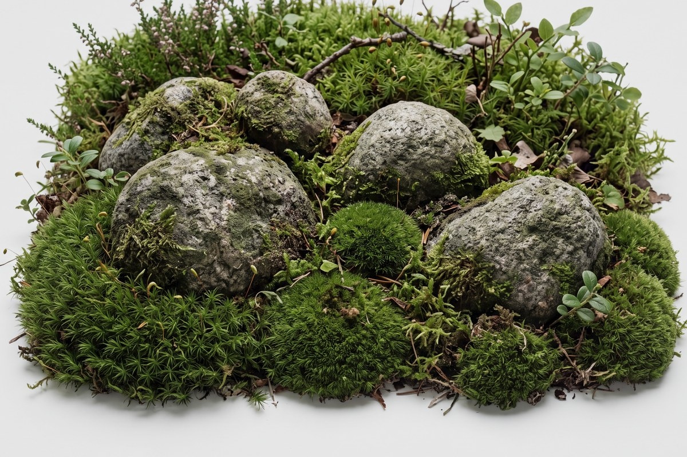
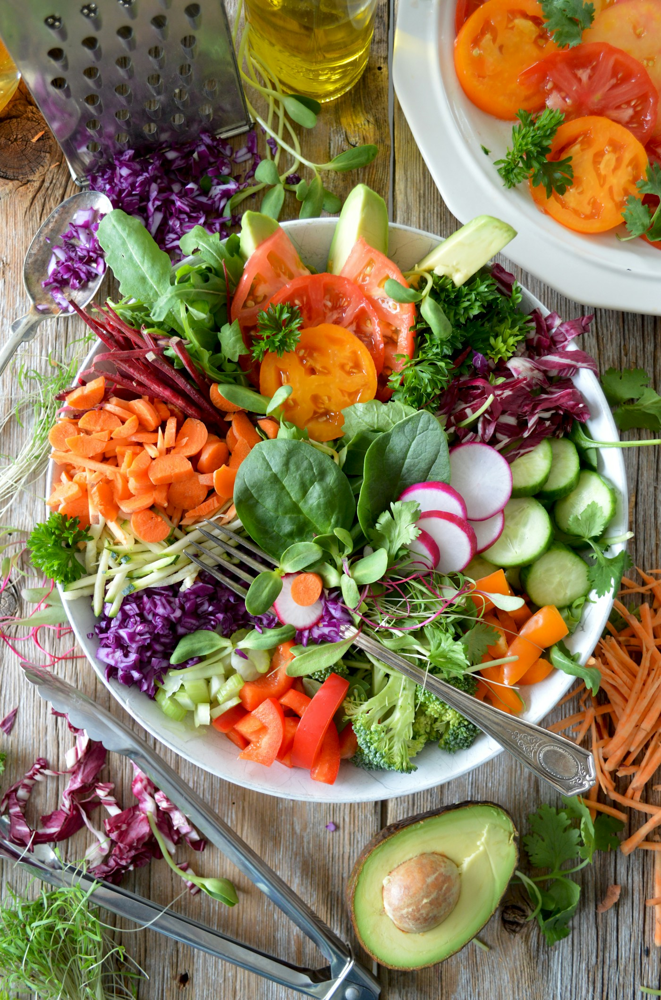
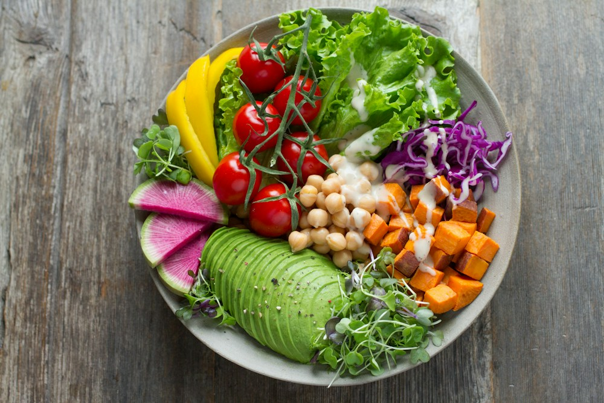
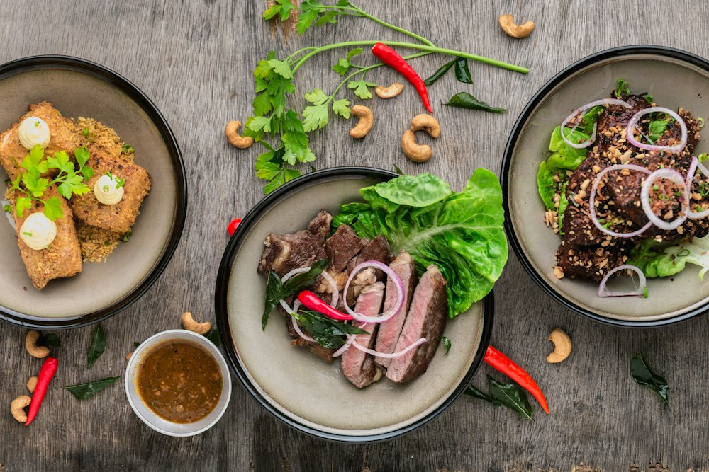

Our Ethos

Our Ethos
Protecting communities through clean water, mindful preparation, and science-backed food hygiene.
NCSC Study 26–27
“Food safety doesn't begin at the restaurant. It begins with our everyday habits.” Explore the science of food hygiene, test your habits, and inspect our survey findings.

Clean hands, safe water, and fresh ingredients prevent foodborne disease before it starts.
From farm and market to kitchen counter and dining plate, food passes through five critical stages. A single lapse in hand hygiene, water quality, or storage temperature compromises the entire chain.

Breaking the transmission flow (Source → Food → Human → Health Risk) requires targeting all three classes of food contamination:
Bacteria, viruses and parasites — the leading cause of foodborne illness worldwide.
Prevention: Cook thoroughly, keep clean, separate raw & cooked, chill promptly.
Pesticide residues, unwashed produce, unsafe water, or leached container toxins.
Prevention: Use clean water, rinse produce under running water, use food-grade storage.
Dust, hair, insects, or foreign fragments entering uncovered meals.
Prevention: Keep food covered with lids/nets and inspect ingredients before cooking.

Why: Wash hands and keep surfaces and utensils clean so microbes don't transfer to food.
Example: Wash hands with soap for 20s before preparing food and after handling raw meat.
Daily Action: Make handwashing a fixed routine before every meal and cooking session.
Use dedicated cutting boards and store raw meat below cooked food in the fridge.

Refrigerate perishables within 2 hours; reheat leftovers until steaming hot.
Developed as the practical digital awareness component of the National Children’s Science Congress (NCSC 2026–27) study: “Food and Hygiene Habits Amongst People: Survey, Analysis and Awareness Study.”
Problem: Public awareness and everyday food-hygiene behaviour do not always match.
Method: Structured questionnaire-based descriptive survey examining hand hygiene, produce washing, food covering, expiry checks, raw/cooked separation, and street-food evaluation.
Analysis: Frequency distributions, percentage comparisons, cross-tabulations, and visual charts.
Note: This platform does not claim behaviour improved unless a formal before/after evaluation is conducted.
Student Researcher · Class XI · Session 2026–27 · National Children’s Science Congress (NCSC).
Translating empirical survey findings into an interactive awareness and habit-building digital platform.
Scroll down to access the 3-Level Guide, Animated Storyboards, Quiz, Body Map, Survey Charts & 7-Day Challenge.
⚠️ Why it matters: Harmful microbes often do not change the smell, taste or appearance of food.
✅ What you can do: Don't judge safety by looks alone — follow safe handling, storage and time limits.
Complete each level from Basic Habits to Smart Consumer Behaviour to unlock the next tier.
Click a glowing anatomical hotspot to inspect how foodborne pathogens affect the human body.
Nausea, vomiting and acute abdominal cramps can occur within hours of consuming contaminated food or bacterial toxins.
The exact clinical effect depends on the pathogen dose, toxin stability, and host immunity. Educational overview — does not replace medical advice.
A street cart where food is uncovered and flies are visible.
Food Safety Champion 🏆
You answered 11 of 11 correctly.
“If food looks and smells normal, it must be safe.”
Tick what you practiced today. Stays privately on your device.
Interactive visualisation of respondent hygiene habits — supports live data entry for field survey results.
One habit a day for a week. Tick each day as you complete it to earn the Champion seal.
Click any slogan below or enter your name to generate and download a personalized NCSC Awareness Poster.
Enter your name and choose a slogan to render an official NCSC FoodSafe pledge card.
“Food Safety Starts With Me.”